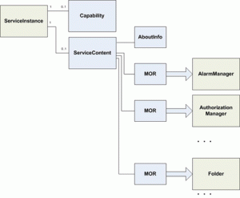
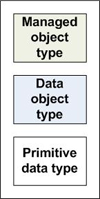
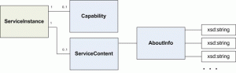

リファレンス
- https://www.vmware.com/support/developer/vc-sdk/
- https:// "vcenter_ip" /mob/
参考サイト
- http://thinkit.co.jp/story/2010/06/23/1617
Overview
Types
4つのタイプがある。
| vSphere APIの型 | 普通のプログラミングとの類推 |
|---|---|
| managed object type | プリミティブ型、複合型 |
| data object type | 抽象データ型 |
| enumerated type | 定数 |
| Fault type | 例外型 |
1. Managed object types
Managed object typeとは
(サーバーサイドのオブジェクトモデルの基本的なデータを担っている。data objectも同じく。)
managed objectには、大きく2つの種類がある。
-
ManagedEntity を拡張したもので、仮想コンポーネントのインベントリとして使われている。
"managed entities"と呼ばれることもある。例えば以下のようなものがある。
| HostSystem | ホストシステムのインスタンス | | VirtualMachine | VM | | Datastore | データストア |
-
システム全体のための、サービスを提供するもの。
例えば、以下のもの。| PerfomanceManager | パフォーマンス管理 | | LicenseManager | VMware製品のライセンス管理 | | VirtualDiskManager | 仮想ストレージの管理 |
Managed object typeの使い方
使いはじめるには、
- connect : サーバーに接続
- authenticate :認証を通す
- session : セッションを得る
というステップがある。
セッションを貼った後は、ServiceInstance という managed objectを得る。
ServiceInstance の下には、 Data object typesがぶら下がっている。
以下の図で、"MOR"というのは、 ManagedObjectRefarence の略で、
これは、server-side object へのリファレンスを与えるdata objectである。
※図はvmwareのドキュメントから。

凡例

managed obejectは、property と operation(method)を持っている。
2. Data object types
Data object typeとは
Javaでいう抽象データ型や、C++でいうstructデータ型のようなもの。
managed object typeが、プリミティブデータ型だったり、複合データ型だったりする。
(vSphere API的な意味での、プリミティブデータ型は、 XML Schemeプリミティブで書かれている。例えば、xsd:string とか。)
※図はvmwareのドキュメント から。

Data object typeの例
| data object | 説明 |
|---|---|
| AlarmInfo | AlarmSpecから継承するプロパティ + ManagedObjectReference(Alarm managed objectへのリファレンス) |
| ManagedObjectReference | MOR, reference, MoRefとか呼ばれる。server-side managed objectのリファレンス |
3. Enumerated types (enumeration)
予め定義されている値や予め定義されたオブジェクトが保管されているオブジェクト。
つまり、定数のように使われる。
| VirtualMachinePowerState | VMの起動状態を持っている。 poweredOff,poweredOn,suspended |
4. Fault types
サーバーによってあげられる例外。
| Fault | 説明 |
|---|---|
| NotSuported | 呼ばれたメソッドがサーバーでサポートされていなかったとき。vCetnerのメソッドをESXiで呼んだりとかの場合も。 |
| NoPermission | clientユーザーの権限が足りないとき。権限が必要だった、MORを含んで返してくれる |
Comments
comments powered by Disqus